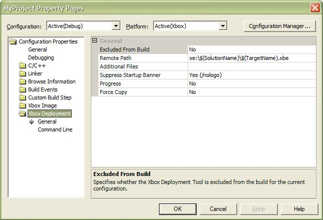
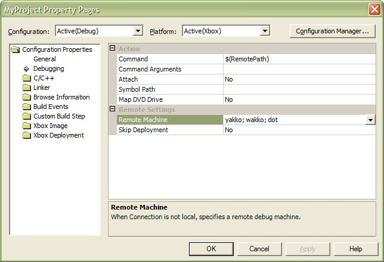

Deploying Xbox projects in Visual Studio .NET is made simple with the Xbox Deployment Tool, which is built into the Xbox Development Kit for Visual Studio .NET. The Xbox Deployment Tool automates the process of copying your game's data and executable files to your Xbox console. You can use this tool to copy either individual files or to copy whole directories recursively. The Xbox Deployment Tool pays attention to file sizes and timestamps, which improves copying speed by avoiding resending unchanged files. If you are developing a System Link or Xbox Live game, you'll appreciate the ability to automatically send files to multiple Xboxes simultaneously.
Xbox Deployment Tool settings are available in the property pages dialog box, which you can open by selecting your project's name in the Solution Explorer, then clicking Properties on the Project menu. Click the Xbox Deployment folder in the dialog box to display properties associated with the Xbox Deployment Tool, as shown in the following image:

The Xbox Deployment Tool may be used to send an Xbox executable and its associated data files to more than one Xbox console at a time. The property that controls the destination of deployed files is Remote Machine, which is located in the Debugging section of the property pages dialog box. Separate multiple console names with semicolons, as in the following example:

Note The Remote Machine property also controls which Xbox console is used for debugging. A single copy of Visual Studio .NET may debug to only one Xbox console at a time, so the first Xbox console listed in the Remote Machine property is the console that Visual Studio .NET chooses for remote debugging.
If you are developing a game for multiple platforms, you may also want to consider changing the Skip Deployment property to Yes. When this property is set, Visual Studio .NET compiles the project but does not deploy it to an Xbox console for debugging. This allows you to verify that changes to a common Win32/Xbox code base still compile with the Xbox Title Libraries, without having to wait for the IDE to copy the files to an Xbox console each time you start a Win32 debugging session.